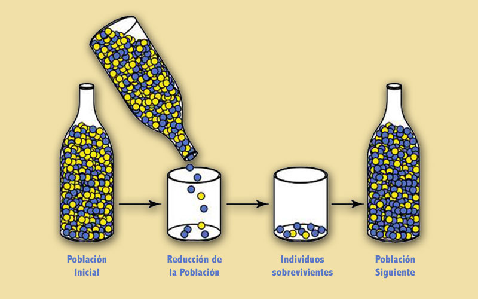

OA
Introdución
- Muchas veces se ha encontrado un problema y se piensa si alguien ya lo resuelto o desarrollado.
- La respuesta es casi siempre SI!
¿Qué es el diseño basado en patrones?
- Consiste en crear una aplicación nueva a partir de un conjunto de soluciones probadas para unel conjunto de problemas.
- Cada problema y su solución está descrito por un patrón de diseño catalogado y analizado por otrosingenieros de software que han encontrado el problema e implementado su solución cuando diseñaban otras aplicaciones.
- Cada patrón de diseño provee u enfoque demostrado para el problema que debe resolverse
¿Porqué es importante?
¿Ha escuchado la frase “reinventar la rueda”?
- Eso pasa todo el tiempo en el desarrollo de software y representa una pérdida de tiempo y energía.
- Al utilizar patrones de diseño existentes, se adquiere una solución probada para un problema específico.
- A medida que se aplica cada patrón, las soluciones se integran y la aplicación que se va a elaborar se acerca más al diseño final.
Muchas soluciones posibles
- Es razonable afirmar que la mayoría de problemas tienen muchas soluciones, pero sólo es eficaz aquella que resulta apropiada en el contexto del problema existente.
- El objetivo es proporcionar la solución que satisfaga mejor, aun cuando éstas sean contradictorias.
- Por último, toda solución tiene consecuencias que afectan otros aspectos del software y que se vuelven parte del sistema de fuerzas de otros problemas por resolver en el sistema mayor.
Proceso de Identificación de un patrón
- Comienza con el reconocimiento de patrones en la aplicación que se trata de construir, continúa con una búsqueda para determinar si otros han usado el patrón y termina con la aplicación de un patrón apropiado.
- Es frecuente que la segunda sea la tarea más difícil. ¿Cómo se encuentran patrones que se ajusten a las necesidades?
- Una respuesta a esta pregunta debe basarse en la comunicación eficaz del problema.
Lenguajes y repositorios de patrones
- El lenguaje tiene una sintaxis y semántica que se utiliza para comunicar ideas o instrucciones de procedimiento en forma eficaz.
- Cuando se emplea el término lenguaje en el contexto de los patrones de diseño, adopta un significado un poco distinto.
- Un lenguaje de patrón agrupa un conjunto de patrones, cada uno de los cuales se describe con el uso de un formato estandarizado e interrelacionado para mostrar cómo colaboran los patrones para resolver problemas en un dominio de aplicación.
Dominio del Problema
- El dominio del problema primero se describe de manera jerárquica, comenzando con problemas de diseño amplio asociados con el dominio, y luego se refina cada uno de ellos en niveles de abstracción
- más bajos.
- En un contexto de software, los problemas de diseño amplio tienden a ser de naturaleza
- arquitectónica y se abocan a la estructura general de la aplicación y a los datos o contenido que le dan servicio.
Diseño de Software basado en Patrones
Los mejores diseñadores en cualquier campo tienenuna habilidad extraña para reconocer patrones que caracterizan un problema, y asociarlos a una solución.
Un ingeniero del software debe observar cada oportunidad en la que puedan reutilizar patrones de diseño existentes, en vez de crear otros nuevos.
Un ingeniero del software debe observar cada oportunidad en la que puedan reutilizar patrones de diseño existentes, en vez de crear otros nuevos.
Patrones y Evolución
- Una de las razones por las que los ingenieros de software están interesados (e intrigados) por los patrones de diseño es que los seres humanos son inherentemente buenos para reconocer patrones en general.
- Si no fuera así, estaríamos congelados en el tiempo y el espacio: seríamos incapaces de aprender de nuestras experiencias.
- Es la base de la evolución.
Ejemplo: Patrón "Cuello de Botella"
Imagine que va camino al trabajo por Mcal.Lopez, cuando le avisan que ocurrió un serio accidente.
Se encuentra a 3 km del accidente, pero ya vio que el tráfico se hace lento.
El patrón CuellodeBotella produce resultados predecibles (embotellamiento), pero no hace nada más que describir un fenómeno.
Se le llama patrón no generativo debido a que describe un contexto y un problema, pero no ofrece ninguna solución clara.
Se encuentra a 3 km del accidente, pero ya vio que el tráfico se hace lento.
El patrón CuellodeBotella produce resultados predecibles (embotellamiento), pero no hace nada más que describir un fenómeno.
Se le llama patrón no generativo debido a que describe un contexto y un problema, pero no ofrece ninguna solución clara.

Estructura de implementación
- Los patrones podrían no ser suficientes para desarrollar un sistema completo.
- En ciertos casos, es necesario crear una estructura para la implementación.
- Una estructura no es un patrón arquitectónico, sino un esqueleto con varios “puntos de conexión” (también llamados ganchos o ranuras) que permiten adaptar distintos patrones a un dominio de problema específico.
Patrones Arquitectónicos
Los patrones arquitectónicos para el software definen un enfoque específico para el manejo de algunas características del sistema:
Control de acceso. Hay situaciones en las que el acceso a datos está limitado a usuarios finales definidos específicamente.
Desde un punto de vista arquitectónico, el acceso a cierta parte de la arquitectura del software debe controlarse de manera rigurosa.
Concurrencia. Muchas aplicaciones deben manejar tareas múltiples de manera que simule paralelismo.
Control de acceso. Hay situaciones en las que el acceso a datos está limitado a usuarios finales definidos específicamente.
Desde un punto de vista arquitectónico, el acceso a cierta parte de la arquitectura del software debe controlarse de manera rigurosa.
Concurrencia. Muchas aplicaciones deben manejar tareas múltiples de manera que simule paralelismo.
Patrones de Diseño de WebApps
Cuando se consideran los problemas de diseño que deben resolverse para construir una webapp, es bueno considerar categorías de patrones en dos dimensiones: centrarse en el diseño del patrón y en el nivel de detalles.
Patrones de arquitectura de la información: se relacionan con la estructura general del espacio de información y con las formas en las que los usuarios interactúan con ésta.
Patrones de arquitectura de la información: se relacionan con la estructura general del espacio de información y con las formas en las que los usuarios interactúan con ésta.
Patrones de Diseños de WebApps
Patrones de navegación: definen estructuras de los vínculos de navegación, tales como jerarquías, anillos, recorridos, etcétera.
Patrones de interacción: contribuyen al diseño de la interfaz de usuario.
Patrones de presentación: ayudan a presentar el contenido al usuario a través de la interfaz.
Patrones funcionales: definen los flujos de trabajo, comportamientos, procesamiento, comunicación y otros elementos algorítmicos dentro de una webapp.
Patrones de interacción: contribuyen al diseño de la interfaz de usuario.
Patrones de presentación: ayudan a presentar el contenido al usuario a través de la interfaz.
Patrones funcionales: definen los flujos de trabajo, comportamientos, procesamiento, comunicación y otros elementos algorítmicos dentro de una webapp.
Resumen y Conclusiones
- Los patrones de diseño dan un mecanismo codificado para describir problemas y su solución en forma tal que permiten que la comunidad de ingeniería de software diseñe el conocimiento para que sea reutilizado.
- Un patrón describe un problema, indica el contexto y permite que el usuario entienda el ambiente en el que sucede el problema, y enlista un sistema de fuerzas que indican cómo puede interpretarse el problema en su contexto, y el modo en el que se aplica la solución.
Pregunta de Elección Múltiple
Solución
Solución
Solución
Solución
Solución
Enlaces de interés sobre los patrones de diseño
-
Los modelos de programación Java / Diseño - Un muy buen artículo sobre patrones de diseño
-
Los Tutoriales de Java TM -Los tutoriales de Java son guías prácticas para los programadores que deseen utilizar el lenguaje de programación Java para crear aplicaciones.
-
Java ™ 2 SDK, Standard Edition - Sitio Oficial para Java ™ 2 SDK, Standard Edition
-
DesignPatterns Java - artículos breves sobre patrones de diseño.
Reflexión
Los
patrones de diseño representan las mejores prácticas utilizadas por los
desarrolladores de software orientado a objetos experimentados. Los
patrones de diseño son soluciones a los problemas generales que
enfrentan los desarrolladores de software durante el desarrollo de
software. Estas soluciones fueron obtenidos por ensayo y error por
numerosos desarrolladores de software por todo un período sustancial de
tiempo.